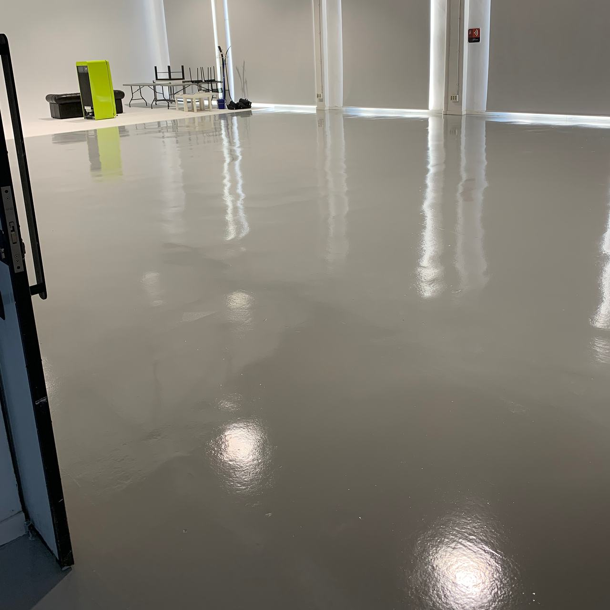

Sabadell, la ciudad de al lado
Pavimentos, estructuras y cubiertas para las naves de Sabadell; fachadas de comunidades, terrazas y microcemento para edificios y pisos. Venimos desde Terrassa, que linda con Sabadell.

Tres avisos que da una nave
En Can Roqueta, en Sant Pau de Riu-sec o en una nave del casco urbano, los problemas suelen empezar igual. Cada uno tiene su solución, y conviene atacarlo antes de que pare la actividad.
- El suelo suelta polvo, se mancha o se levanta
- El hormigón sin proteger se desgasta con las ruedas y absorbe aceites. Un pavimento epoxi o de poliuretano lo sella; si ya hay una pintura vieja que se levanta, primero hay que quitarla y preparar el soporte. Pavimentos epoxi y de poliuretano.
- Pilares, cerchas o portones con óxido
- El óxido no se para pintando encima: se elimina, se imprima y se protege por capas según el ambiente de la nave. Pintura de estructuras metálicas.
- Goteras en la cubierta
- En chapa, tornillos, solapes y canalones son los puntos débiles. Una membrana de poliuretano líquido los cubre de forma continua, sin juntas. Impermeabilización de cubiertas de nave.

La obra se ajusta a tu producción
Un pavimento necesita la zona despejada y unas horas de curado sin tráfico. No se puede saltar, pero sí elegir cuándo y dónde: dividimos la nave en zonas que se van rotando, o concentramos el trabajo en un cierre de la actividad.
Antes de empezar te damos los tiempos de cada zona —cuándo se cierra, cuándo se pisa, cuándo vuelven las carretillas— para que organices turnos y muelles.
Hospital Parc Taulí
Nuestro equipo ha trabajado en el Hospital Parc Taulí de Sabadell. Estamos completando el año y la descripción del trabajo para publicarlos con exactitud.
Un hospital no cierra por obras. Hay que trabajar por sectores, separar la zona de obra de pacientes y personal, controlar el polvo y elegir productos de poco olor y fáciles de limpiar. Es la misma lógica que en una nave en marcha, con más exigencia.
Fachadas de ciudad lanera, pisos de hoy
Sabadell creció, como Terrassa, con la industria de la lana. En el centro quedan muchas fachadas de finales del siglo XIX y principios del XX, con revocos, estucos y molduras que piden un sistema que deje respirar el muro. En los barrios, la consulta habitual es otra: la fachada del bloque, la terraza o el baño.
Fachadas de comunidades
Diagnóstico, reparación del soporte y pintura según el material. En fachadas antiguas, silicatos Keim.
Terrazas y cubiertas
Impermeabilización con poliuretano líquido, continua, hasta sumideros y petos.
Microcemento
Suelos, baños y cocinas sin juntas, a menudo sin quitar el revestimiento que hay.
Acabados en edificios históricos
Para edificios protegidos: cal, silicato e imitación de las molduras y la piedra que faltan.
Lo que nos preguntan desde Sabadell
¿Venís a Sabadell a ver la nave o el edificio?
Sí. Estamos en Terrassa, la ciudad vecina. Si nos mandas antes fotos, metros aproximados y el uso de la nave, llegamos a la visita sabiendo qué mirar.
¿Podemos hacer el suelo en vacaciones o en un fin de semana?
Es una de las dos formas de planificarlo: concentrar el trabajo en un cierre de la actividad. La otra es dividir la nave en zonas. Lo que se puede hacer en cada caso depende del sistema, el espesor y la temperatura; te lo decimos antes de empezar.
¿Qué sistema necesita una nave con carretillas?
Depende de qué pasa por encima, qué cae al suelo y cómo se limpia. Lo explicamos, con la comparativa entre epoxi y poliuretano, en pavimentos epoxi y de poliuretano.
Nuestra comunidad tiene que reparar la fachada. ¿Por dónde empezamos?
Por saber por qué falla: humedad, fisuras, revoco suelto o una pintura que no deja respirar el muro. Con fotos de la fachada y de los daños más visibles te decimos qué habría que revisar en la visita.
Dinos dónde está y cuándo puedes parar
Para una nave: metros aproximados, actividad, unas fotos y las fechas que te vienen mejor. Para un piso o una comunidad: fotos y lo que quieres resolver.